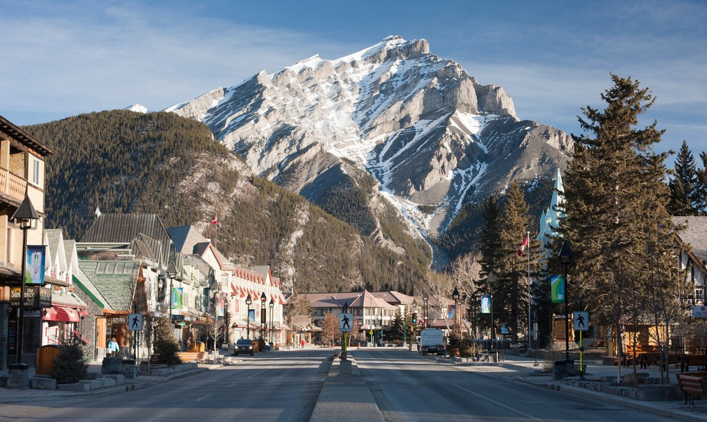
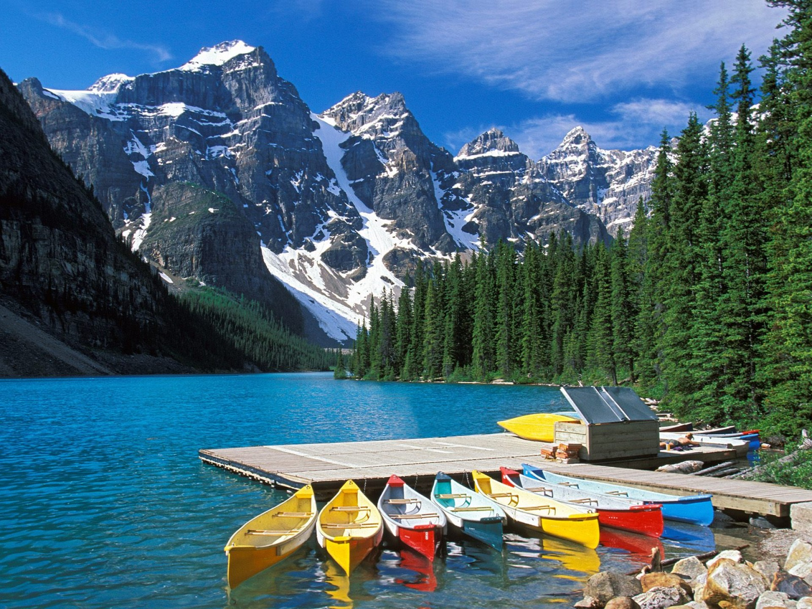
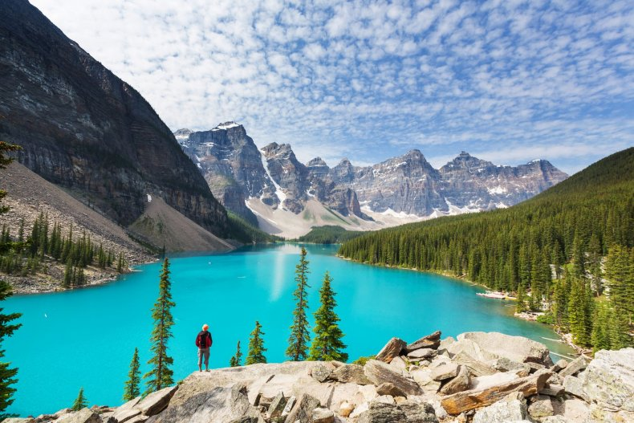
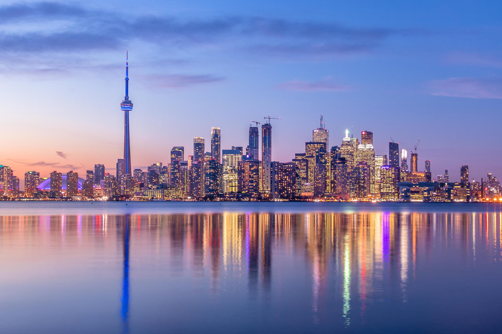
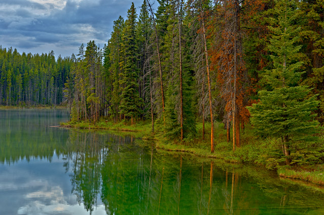
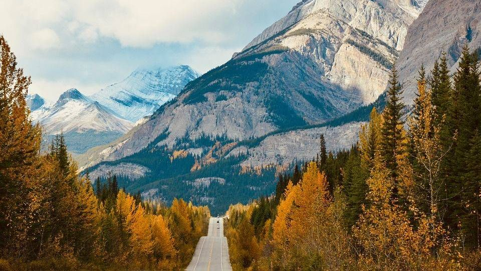
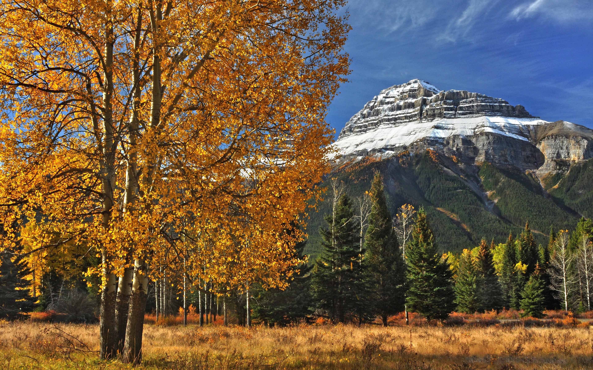
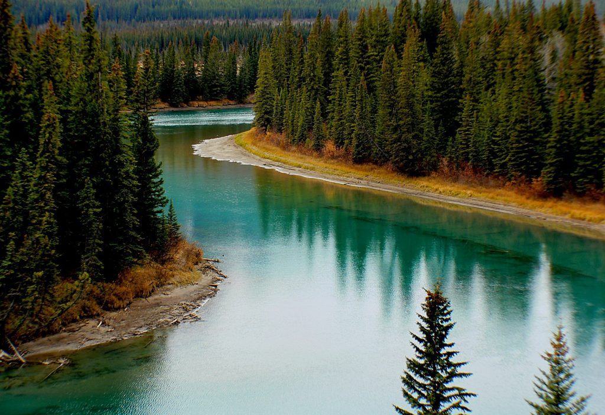

Canada
Canada covers an area of 9,985,000 km² in the north of North America. Eastern shores of the country washes the Atlantic Ocean, the western - the Pacific, and the northern - the Arctic Ocean. Canada has maritime borders with France and Denmark, as well as a land border with the United States. Total coastline is over 200,000 km. Canada is a bilingual country with French and English speaking in as official languages. The territory of the country consists mainly of plains. In the west of Canada there are mountains with popular ski resorts. The highest point in the country is Mount Logan, reaching a height of 6000 meters. Canada has vast territories with a variety of topographical characteristics, so climatic conditions in different parts of the country are very different. For most of Northern Canada characterized by a subarctic climate. The regions subject to him are covered with snow and ice for more than half a year. Coastal British Columbia has an oceanic climate with mild, wet winters and warm dry summer. If you are going to visit Canada, check the weather calendar by month to get the best organize your vacation.
Weather in Canada in January
January is the coldest month in Canada. The weather in January will be different depending on the area. Coastal areas and the Great Lakes region (Ontario, Newfoundland, Quebec) are characterized by temperatures of -9°C during the day and -12°C at night. The water near the coast warms up to +5°С. On windy days in northern Canada, temperatures can drop as low as -40°C. Vancouver is the warmest in January: up to +6 during the day, and +4°C at night. The level of precipitation in this area will be 180 mm, while in the rest of the country - 50 mm (in the form of snow). Many cities are covered with dense snow cover. The winter months are ideal for relaxing in the country's ski resorts.
Weather in Canada in February
A typical winter in Vancouver is constant rain. Usually one week the temperature drops to -5°C, and then rises to + 8°C. Temperatures often drop below freezing in Toronto (-3°C during the day and -6°C at night). However, snowfall can start at any time. In the north of the country, the daytime air temperature is -35°C, and after sunset it drops to -45°C. In the central and eastern parts of the country, the average air mass temperature during the day is -4°С, and at night -14°С. In Ottawa, there are 2-3 days in February, when it gets as cold as -20°C at night. Usually during the daytime it is -5°C, and at night - about -14°C. The water temperature in the oceans is +1°C in the east and +7°C in the west.
Weather in Canada in March
- With the advent of spring, daily air temperatures rise, as a result of which the snow cover begins to melt. In Montreal and Calgary during the day the temperature already reaches +1°C, but at night it drops to -5°C.
- In the northern regions of the country, indicators of -30 ° C are recorded, and in the northwest (Yukon), during the day, the thermometers show -10 ° C, at night -20 ° C.
- Precipitation is not observed here.During the day, the air in Vancouver warms up to + 10 ° C, and the water in the ocean - up to + 8 ° C.
- On average, the temperature in the country during the day reaches +2°C, and at night -7°C.
Weather in Canada in April
Temperature fluctuations across the country reach 10 degrees ( +11°C during the day and +1°C at night ), but the figures are similar almost throughout the country. The coldest temperatures are recorded in the far north of Canada - down to -20°C. In the northwest (Yukon) during the day, the minimum temperature of the thermometer is -1°C, at night -10°C. In the southwest, the water in the ocean will warm up to +10°C, and off the east coast - up to +4°C. Most precipitation (up to 80 mm) is expected in the east, and in the rest of the territory up to 40 mm in 2-4 rainy days.
Weather in Canada in May
The highest temperatures during the day are expected in Montreal, Ottawa and Vancouver: +16°C…+19°C during the day and +11°C at night. The water near the coast warms up to + 12 °. Away from the coastal regions, the climate has a more pronounced continental character. The average daytime temperature reaches +15°C, by night it drops to +7°C. Precipitation is expected throughout the country. In 3-5 rainy days, from 35 mm (Faro) to 70 mm (Quebec) will fall.
Weather in Canada in June
In June in Vancouver, Montreal, Toronto, the arrival of summer is felt:
- around +23°С during the day and up to +15°С at night.
- Sea water warms up to +19°С.
- Pleasant weather conditions are also in Calgary, Quebec, Ottawa - around + 20 ° C during the day, and up to + 10 ° C at night.
- At the foot of the mountains during the day the sun warms the air up to +16°C, and the maximum is 3 rainy days (up to 50 mm of precipitation).
- In general, 60-90 mm of precipitation will fall in the country over 4-6 rainy days.
Weather in Canada in July
The weather in July is hot only in the southern part of the country; no elevated temperatures are observed in the rest of the territory. The clear and clear sky quickly becomes overcast, but the rains are weak and short-lived. The average daily temperature of air masses in the country is about +25°С, and after sunset it is +15°С. In Montreal, Toronto, Winnipeg in July, on average +26°C…+29°C during the day and about +17°C…+20°C at night. The water temperature off the Canadian coast is +19°С…+22°С. The amount of precipitation in July reaches a level of 40 to 70 mm.
Weather in Canada in August
August is the second hottest month of the year after July. The air temperature indicators are absolutely identical to the previous month. During the day, the air temperature in the country is + 25 ° C, and at night it drops by 10 marks. The water temperature near the coast ranges from +19°С to +23°С. The level of precipitation for 3-5 rainy days will be 50-80 mm.
Weather in Canada in September
With the advent of September, the weather is still reminiscent of summer, but the evenings are already a little cooler. The average daily temperature in the country is kept at +20°С, dropping to +10°С at night. In the southwest and southeast of the country, the air warms up to +21°C during the day, and up to +13°C at night. The water in the Pacific Ocean heats up to +15°С, and in the Atlantic - up to +21°С. The clear sky is sometimes covered with clouds, but the rains are rare and short-lived. For 2-4 rainy days a month falls from 30 mm to 70 mm of precipitation.
Weather in Canada October
The weather in October is real autumn:
- the day becomes noticeably shorter, the amount of rain increases and cold winds blow more often.
- Если на большинстве территорий Канады в светлое время суток показатели термометров удерживаются
- mark +10°C…+14°С
- then the northwest (Yukon) meets the first frosts - down to -2 ° C during the day and -8 ° C at night
- On average, about 60 mm of precipitation is expected in the country. The rainiest Vancouver - 115 mm of precipitation.
- The water in the oceans warms up to +9°C…+14°C.
Weather in Canada November
In Winnipeg and Calgary, it is already -1°C during the day, and at night the temperature drops to -5°C. In the mountainous regions of the country, indicators of -30 ° C are recorded, and in the northwest (Yukon), during the day, the thermometers show -15 ° C, at night -18 ° C. During the day, the air in Vancouver and Toronto warms up to +9°C, and the water near the coast - up to +8°C. The rainiest in November is Vancouver, where the rainfall will be 150 mm, while in the rest of the country it reaches 50 mm.
Weather in Canada in December
Almost throughout the country during the day, the thermometers show -3°C ... -6°C, and after sunset - about -10°C. The west coast (Vancouver) is characterized by precipitation, which reaches its maximum in winter - 150 mm. Average monthly temperatures here are usually above zero: +6°C during the day and +3°C at night. In Vancouver, the level of precipitation will be 180 mm, while in the rest of the country it reaches 50 mm. It is still warm in Toronto during the day (up to +3°C), but the nights are already frosty (-5°C). The water near the coast warms up to +5°C…+7°C. Tourists come to the mountainous regions of the country to admire the unique northern lights.